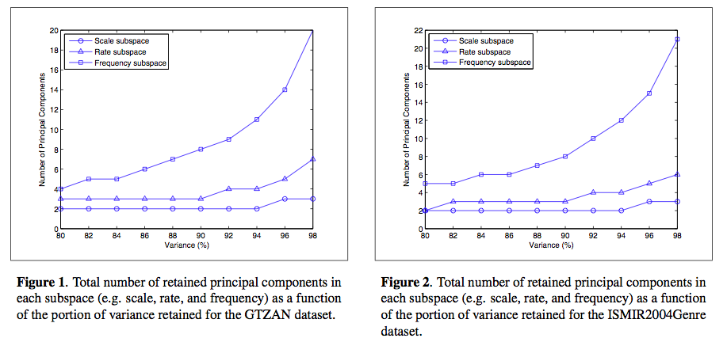
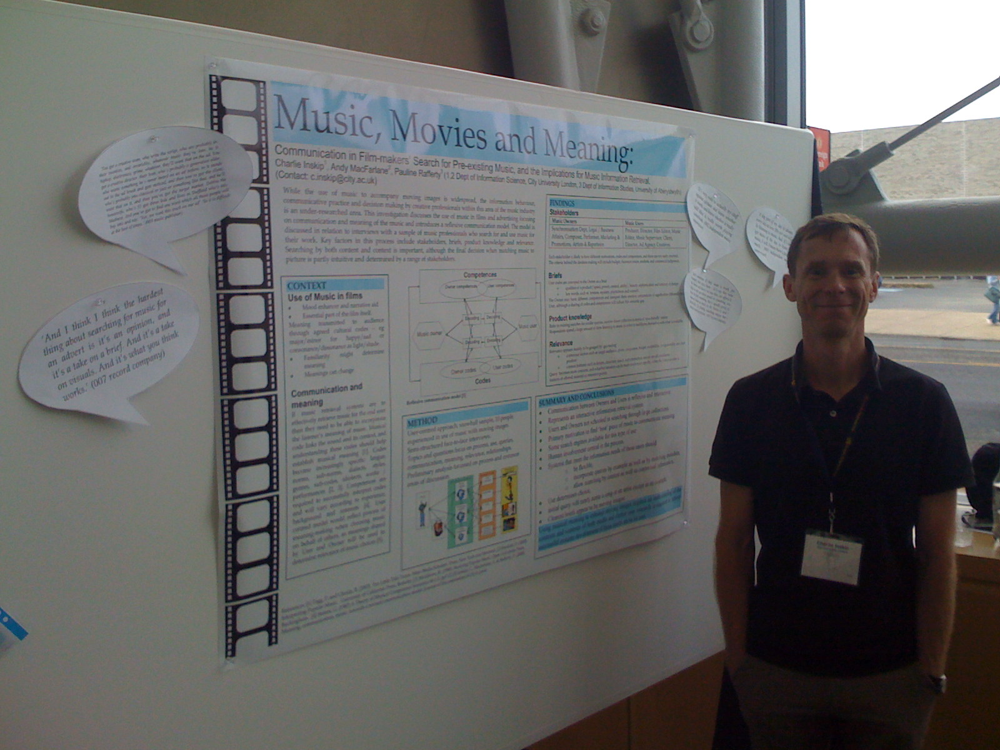
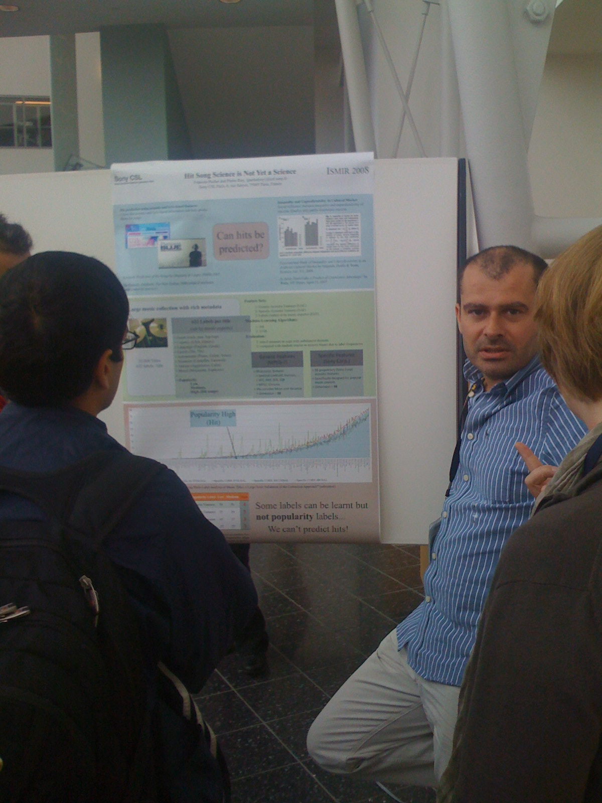
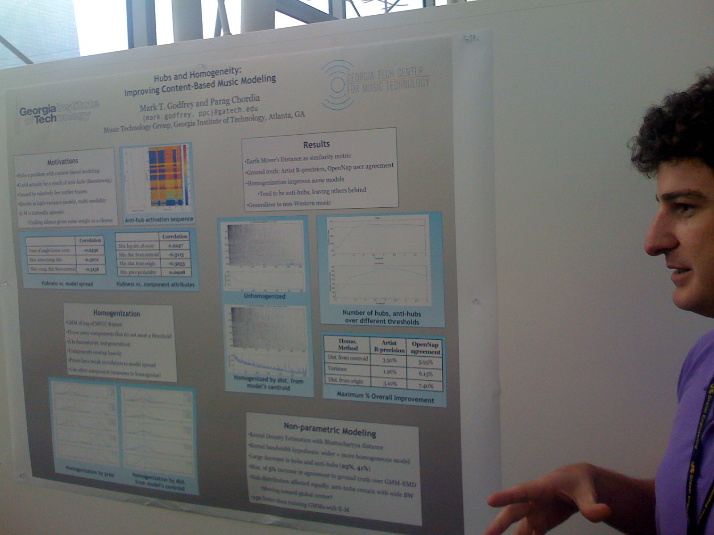
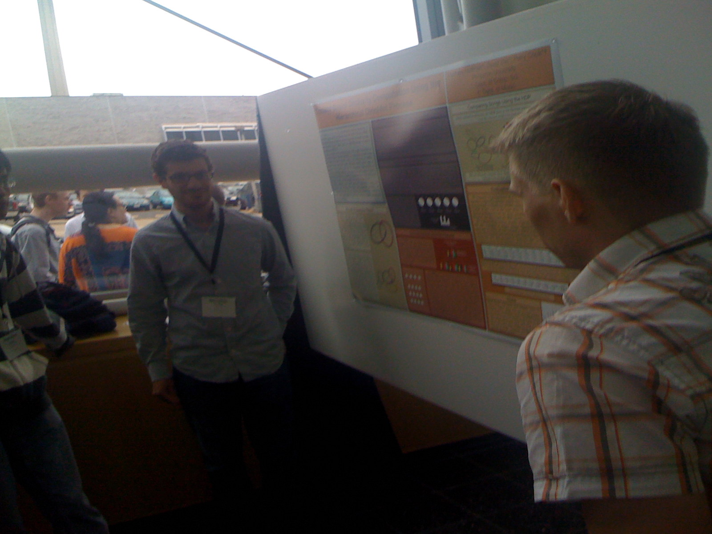
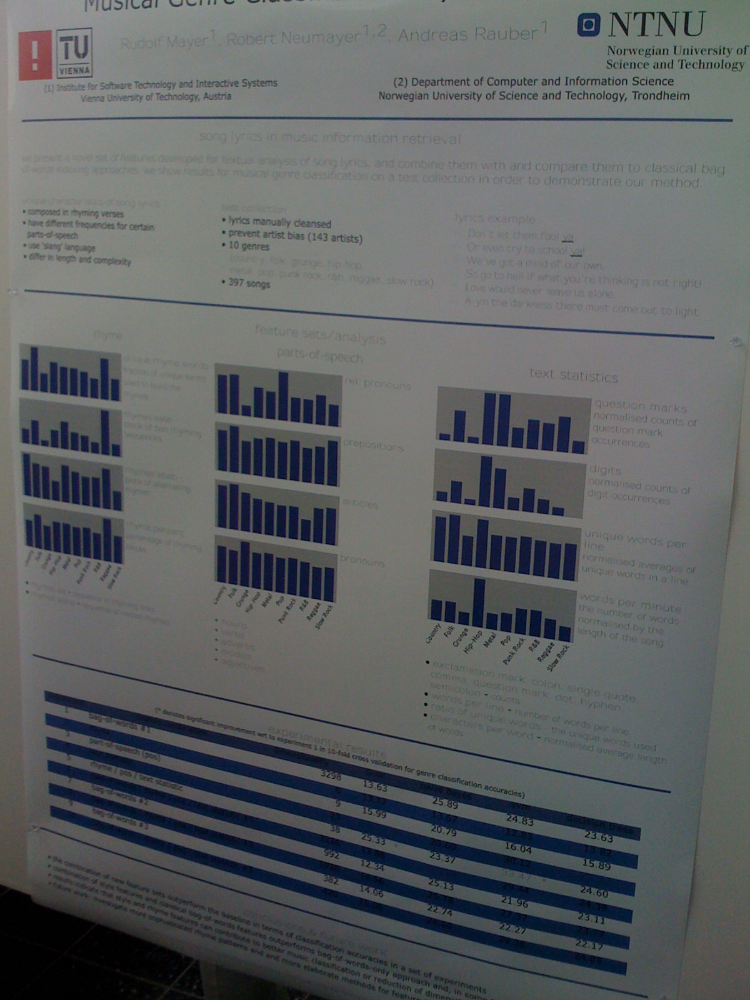
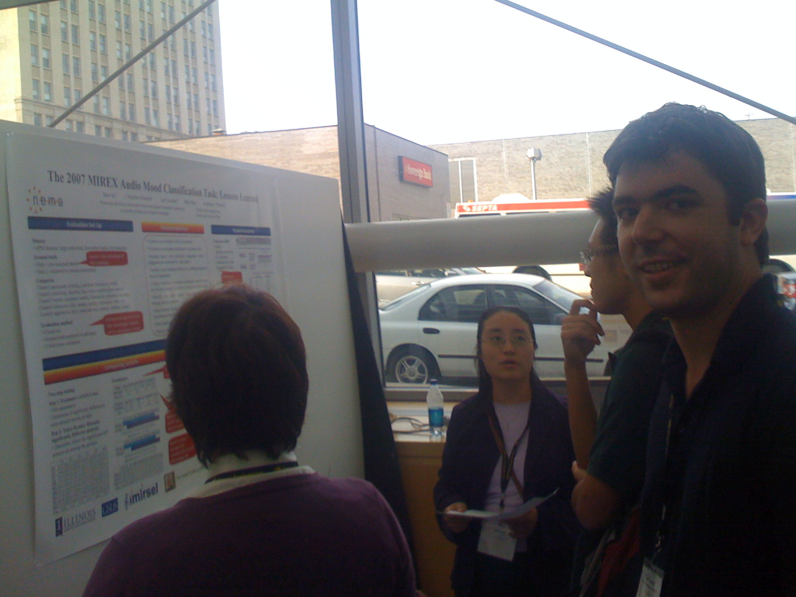
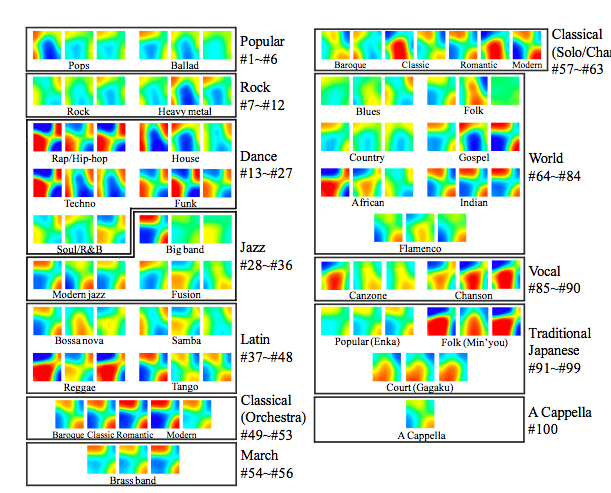
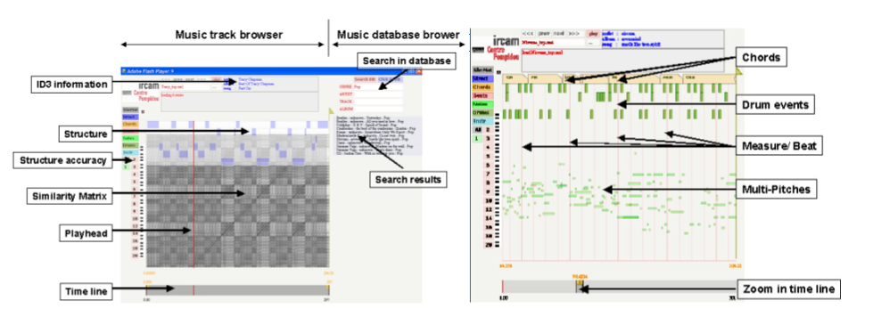

Thursday Sep 18, 2008
Ben Fields has started the ball rolling with a post on his blog: introductory thoughts on a playlist generation task in MIREX 2009. If you are interested in playlist generation, then join the conversation.
Some ideas that have been floated for a playlist evaluation:
- The traditional IR approach - use a large database of human generated playlists (from webjay, musicmobs etc), randomly remove tracks from the playlist - calculate precision and recall for systems that try to predict what tracks were removed.
- Human evaluation - Have experts (DJs, music critics,) and non-experts evaluate the playlists.
- Create a reverse turing test - present each system with a set of playlists - some human created, some created at random - systems try to predict which playlists are human generated.
MIREX Posters
The poster session on Day 3 was dominated by the MIREX submissions. I'm particularly interested in this year's new task on autotagging which had a number of good submissions.The autotagging submission by K. Trohidis, G. Tsoumakas, G. Kalliris, and I. Vlahava
Mike Mandel describes LabRosa's autotagger.
Kris West describes the MIREX 2008 audio classificatiom task.
Andreas Ehmann shows off the MIREX summary poster. Look at all those numbers.

Luke Barrington and Doug Turnbull present their autotagger.

George Tzanetakis and Malcolm Slaney have a chat.
Geoffrey Peeters presents his generic training and classification system for MIREX.

Doug describes the size of the brain needed to understand his work on the use of sparse time-relative auditory codes for music.
Wednesday Sep 17, 2008
A Tunneling-Vantage Indexing Method for Non-Metrics
Rainer Typke and Agatha Walczak-TypkeRanier and Agatha are looking at creating an instance of the Earth Mover's Distance that can be used to compare rhythmical patterns. hey use a unique way of pre-calcuating tunnels between the subspaces that link nearest in the different subspaces. Evaluation: 40,000 sequences with random errors. With large search radiuses they get decent precisions (they get perfect recall). "It's always a good idea to closely inspect your balls - their shape might allow you to apply optimum vantage indexing to your favorite metric, resulting in retrieval in O(Log n) without any false positives or false negatives.
The Perlhumdrum and Perllilypond Toolkits for Symbolic Music Information Retrieval
Ian KnopkeAn alternative toolkit for working with large collections of Humdrum files. Works with Lilypond. Humdrum is designed for the analysis of music in symbolic form. Humdrum is getting stale - many of the tools run in awk (Woohoo!) that just don't work anymore with the latest awk. So Ian started rewriting them all in Perl. Eventually he decided that there might be a better way to go instead of just rewriting humdrum piece by piece. Ian walked us through some humdrum notation, and the new PerlHumdrum, and PerlLilypond toolkits. Eleanor Selfridge asked some questions about how people should use PerlHundrum - should they use the scripts or some higher level packaging.

Support for MIR Prototyping and Real-Time Applications in the ChucK Programming Language
Rebecca Fiebrink, Ge Wang and Perry CookRebecca and Ge talk about using ChucK for MIR prototyping. First Ge gave the quick overview of ChucK (this was a very quick summary of what we learned in the ChucK tutorial). Rebecca went on to talk about ChucK in the performance context. One unique things about ChucK is that you can write code in a performance context. Ge gave a demo with the MiniAudicle. Ge once again was writing code during a talk. They moved onto showing how ChucK can be used for analysis (with the aptly named 'upchuck' operator). Implications for MIR: feature extraction, algorithms, with on the fly modifications to let you try things quickly, simple concurrency. Easy to teach and learn, hands-on, immediate feedback - real-time MIR, specially in live performance. Weka-style API analysis - you can do classification an run it on the fly. You could even train a classifier during a performance (so not just perfomrance coding, but performance machine learning - woah).
Rebecca gave a great demo showing live feature extraction, extracting marsyas-like features, along with an adaboost classifier. Rebecca did live training - classical piano for one class, and orchestral for another class. The classifier worked really well.

Rebecca is the Keith Emerson of PlorK (although she doesn't know who Keith Emerson is)
Hopes: - want to see more MIR work done in real-time contexts. Think that this may be a different way to think and do things.
TakeOut - chuck is unique, analysis and synthesis in the same framework, strongly timed, on the fly is great for rapid prototyping.
SMIRK - smirk.cs.princeton.edu
Update Yves and Kurt are responsible for the RDF translation service with some recent input from Mischa Tuffield of Garlik (to help to refine the service and the supporting ontology). Ben Fields did loads of work gathering the data set and extracting audio features.
Keep an eye on these guys, they are going places!
- Doug Eck: Make data available, make it easier for machine learning types to participate
- Brian, Daniel M. - can we/should we use more social data in the evaluations
- Some discussion about using virtualization technology to allow the participants to login and run their submissions.
- Geoffry - repeats the suggestion for making subsets of data available. Perhaps people who participate should have to provide some data as well.
- Scheduling - Kris suggests that perhaps we should decouple MIREX from ISMIR.
Social Playlists and Bottleneck Measurements : Exploiting Musician Social Graphs Using Content-Based Dissimilarity and Pairwise Maximum Flow Values
Ben Fields, Kurt Jacobson, Christophe Rhodes and Michael CaseyBen Field (dressed to kill) talks about his interesting work in looking at acoustic similarity and social networks. Motivation: There's a glass ceiling for content-based classification. Novelty: Don't always want 'similar' music. Novelty is important. Social/cultural awareness . Can we improve recommendations and playlist by incorporating social context and not just acoustic similarity.
Ben conducted a flow analysis of myspace artists, looking for nodes. How: Start with a randomly selected myspace artist, grab their 'top friends' (near neighbors in the graph) and repeat. Do this 6 times - yields > 15,000 artist and 60K tracks. 120K directed edges - 15.5 edges per node. Ben showed that this graph follows the Duncan watts power law.
So what do you do? - group artists based on maximum flow and compared with acoustic similarity. Not too surprisingly, these spaces are not well correlated. (These plots compare the Earth Mover's distance, vs. maximum flow value).
What can we do with this? - Look at meaningful ways to exploit this difference in acoustic and graph similarity. A playlist generator could be created by following maxflow paths through a social graph, where the cost of the paths are determined by acoustic similarity. This is a neat idea.

Music Genre Classification: A Multilinear Approach
Ioannis Panagakis, Emmanouil Benetos and Constantine KotropoulosThis team is looking at automatic genre classification using a bio-inspired cortical representation of the slow multi-scale spectro- temporal modulations of each recording is used. The author described in great detail their novel method for approaching genre classification using cortical Representation with wavelet analysis and tensors. Most of what he talked about was beyond me. He does seem to be bringing a new toolkit from bioinformatics to apply to music, with interesting results. This talk has the most equations per slide of ISMIR so far (50 times more equations then in Malcolm's talk).
Results: about 80% accuracy - which corresponds to at or near the state-of-the-art for genre classification.

Combining Features Extracted From Audio, Symbolic and Cultural Sources
Cory McKay and Ichiro Fujinaga

Cory describes their investigations of the classification utility of combining features extracted from separate audio, symbolic and cultural sources of musical information. Again, this is a genre classification experiment.
Can you improve classification performance by combining features. Also cory looks at the types of classification errors. Will this help us break through the glass ceiling?
They extracted the 3 types of features and compared classification of all 7 subsets. They created a new dataset: the SAC Dataset - Symbolic Audio Cultural. SAC has 10 genres of music, that can be collapsed into 5 genres. Use the jMIR toolkit for analysis.
Results: When combining all 3 features, classification accuracy improved. However the improvements of 3 types over 2 is not statistically significant. Looking at misclassifications - they used a misclassification cost function that reduces the penalty for misclassifying to a similar genre. When using these weighted rates and cultural features are used, the misclassifications tend to be in related genres. Results for a 10 genre taxonomy: 78.8% vs. the 68% results from last year - indicating that combining the feature types helps break through the glass ceiling. Next: The want to use a larger dataset with a larger class ontology.
Montreal Genre Classification Smackdown - Doug Eck doubts that the symbolic features are really necessary, but Cory thinks that they are.
This was a very clear presentation. Well done, Cory.

I think the best strategy for a keynote, is just to listen ... so I won't be taking any notes.
Update Doug Eck poked Jeanne into telling us what we in the MIR community is doing wrong. She says - what we are doing is not going to help us answer some fundamental and simple questions about music.
Jeremy asks a question about where the boundary between transcription and notation is (isn't a recording just a very fine grained notation?) This gives Jeanne a stomach-ache.
Jeanne has a number of books available at amazon.
Music, Movies and Meaning: Communication in Film-Makers’ Search for Pre-Existing Music, and the Implications for Music Information Retrieval
Charlie Inskip, Andy Macfarlane and Pauline Rafferty Charlie brings lots of insight into the problems of finding music for film - the clash of cultures and the different (and sometimes non-overlapping) vocabularies get in the way. (Charlie is also a really interesting guy to talk to ... he really knows a lot about popular music)
Hit Song Science is Not Yet a Science
Francois Pachet and Pierre RoyPierre presenting his poster debunking Hit Song Science. (As Jim Waldo says ... anything with 'science' in its name probably isn't)

Hubs and Homogeneity: Improving Content-Based Music Modeling
Mark Godfrey and Parag Chordia Mark and Parag were describing some their work to avoid hubs that occur with some timbre-based similarity models.
Content-Based Musical Similarity Computation Using the Hierarchical Dirichlet Process
Matthew Hoffman, David Blei and Perry Cook Matthew showing his promising work that is faster and potentially and higher quality than classical approaches.
Rhyme and Style Features for Musical Genre Categorisation By Song Lyrics
Rudolf Mayer, Robert Neumayer and Andreas Rauber Some interesting and fun work looking at features in lyrics that can be used for music classification.
The 2007 MIREX Audio Mood Classification Task: Lessons Learned
Xiao Hu, J. Stephen Downie, Cyril Laurier, Mert Bay and Andreas F. Ehmann The MIREX team showing detailed results from the last year's Audio Mood classification task. It is really interesting to see the amount of improvement that occurred from 2006 to 2007. Apparently the same improvement occurred this year. Cyril is doing some really interesting things with mood. He showed me his mood music player that shows a real-time indicator of the mood of the currently playing song as well as a really nice music search engine being developed at BMAT that allows you to query for music based upon multiple moods and other aspects of the music.
Tuesday Sep 16, 2008
Using Expressive Trends for Identifying Violin Performers
Miguel Molina-Solana, Josep Lluis Arcos and Emilia GomezMiguel presents the goal - identify violinists by their playing style using commercial audio recordings and state-of-the-art feature extraction tools.
Problems : High heterogenicity, Partial Accuracy, Perform variability.
Approach: characterize performers by analyzing only the feature trends.Three steps: Feature extraction, Modeling trends, Classify models
Evaluation: 23 different violinists. This graph shows the correct performer position for each of the 23 violinist.

They achieved good results with just a small amount of data.
Hybrid Numeric/Rank Similarity Metrics for Musical Performance Analysis
Craig SappThis paper describes a numerical method for examining similarities among tempo and loudness features extracted from recordings of the same musical work and compares its performance to a Pearson correlation.
89 performances of mazurka - more info here: CHARM and the Mazurka Project
Evaluation - how well can 2 of Rubinstein's performances be identified with the 3rd. Craig really takes advantage of visualizations in his work - I find it to be incredibly interesting (although I don't really understand it all very well).

Creating and Evaluating Multi-Phrase Music Summaries
Konstantinos Meintanis and Frank ShipmanThis paper explores whether the composition of multiple characteristic phrases that are selected to be highly dissimilar to one another will increase the summary's effectiveness.
Goal - select the most salient phrase from a song to serve as a music summary - useful, for instance, in an online music store - or for personal organization. The summary should be short and recognizable. The author suggests that one highly repeated phrase does not guarantee better effectiveness. Highly repeated, yet different from one another, or distinct (non-repeated) phrases.
- REA - emphasizes repeated phrases
- SDEA - emphasizes phrases that are sonically distinct
- IA = Intermediate algorithm
Hit Song Science is Not Yet a Science
Francois Pachet and Pierre RoyThe researchers look at a large set of data (32000 titles, with 632 labels per title:
- acoustic - genre, epoch, instrumentation
- facts - langauge, subjective, popularity
- subjective - campfire, farewll

The used MIR techniques to see if the could learn any of these labels from acoustic features.
- Grounding and semantics of labels are not related - labes representing acoustic properties are not always easy to learn using acoustic features, but some highly subjective labels can be well modeled by acoustic classifiers.
- they cannot predict hits - does a likeliness of a hit depend only on the quality of the song. Quotes / Summarizes the Duncan Watts study that indicate that social effects are extremely important.
Content-Based Musical Similarity Computation Using the Hierarchical Dirichlet Process
by Matthew Hoffman, David Blei and Perry Cook

Timbral similarity - motivations: Query, playlists, recommendation. Matt started off with explaining the classic approaches: mixtures of gaussians, kl-divergence. HDP Details - Dirichlet Process Mixture Model (DPMM). Matt uses the chinese restaurant metaphor effectively to explaining the DPMM.
Evaluation: Use the SXSW artist. 4 models, single guassian, k-component GMMs, VQ Codebook, and HDP. Use genre as a proxy for similarity. Results show that HDP shows an improvement over the other techniques. HDP and the VQ methods did not produce many hubs or anti hubs (songs that are wrongly evaluated as similar or dissimilar to all other songs). And it is faster. Good paper - and very solid looking work, although the data set is quite small.
Learning a Metric for Music Similarity
Malcolm Slaney, Kilian Weinberger and William WhiteMalcolm presents work at Yahoo. Goal: Describe techniques to build a metric space for better classification or similarity of songs. Euclidean metrics - scale matters a lot.independece. Malcolm suggests applying a rotation and scaling matrix to features to deal with these issues of scale and independence. Where does the matrix come from?
- Whiten - normalize the data so all features have same variance.
- LDA - maximize the inter vs. intra class distance.
- RCA - equalize class dimension
- NCS - Neighborhood component analysis
Optimize the classification error - but this can be problematic with KNN because of the boundary problem. The Large Margin nearest neighbor can help this.
Slaney encourages us to use these simple methods to improve our similairty metrics.
Commercial Music Discovery and Recommendation
Moderator: Youngmoo
Panelists:
- Markus Cremer - Gracenote
- Etienne Handman - Pandora
- Elias Pampalk - Last.fm
- Anthony Volodkin - The Hype Machine
- Brian Whitman - Echonest
Markus gave a history of Gracenote - starting with CDDB. There drive to go commercial stemmed from the need to clean up all the noisy, messy data. Next Markus showed the 'Gracenote solution' slide that highlights the various Gracenote products. Markus finally got to the recommendation at the end of his time -
Etienne - describes the music genome project - classification leading to
recommendation. They use mostly human analysis but do use a little
computer analysis (note to self, ask Etienne what they do) 1,0000
genes, 200 or 300 apply to a given piece, 15,000 new analysis, "we use
people". Originally a b2b play - but now focus on the radio experience -
(which is different from recommendation) - serendipity. They are proud
of the playlisting - listener feedback is very important (over a
billion are used to assist in playlisting). Etienne also ran out of
time before he could finish his pitch.
Elias introduced last.fm - with a succinct description of last.fm. Human-to-human recommendation is very important. Lean forward and lean back modes. Next (update) 5 years: 200 million tracks. subgenres will grow much faster. More data will lead to better recommendations, better response to new trends etc. Data Portability, artists will embrace recommendations (watch out for shilling). Elias finished his presentation time to spare.
Anthony - gives an overview of hype machine. 1.2 million unique visitors (40% us, 12% uk, 6% germany). Why do so many people like HM? Scratching Anthony's personal itch - find new music - he wanted find music that real people were excited about. Didn't like marketing - but liked blogs - blogs are "the excitement filter" - this is the discovery experience - the music that people on the web are excited about. What's next? - Similar / related music recommendations will become a commodity (good point, this is already happy) - it is all going to be about user experience (UI and context will differentiate). Transparency is important. Interfaces are important. Points to thesixtyone.com as an example of how to make music fun. A great 4 minute intro (he's a pro!)
Brian talks about the EchoNest - the goal is to sell MIR to people - they have built lots of tech that they use people for free. Everything should be done by machines, no editors, no filters. They've made all of their data available via their web services. They really want people in the world to use their services. Points to MoreCowbell.dj a fun app. Another demo - they've added a recommender to iMeem.
Discussion section - a wide ranging discussion about music recommendations. Some notes: Why is music recommendation different from other types? - Very personal nature, music is always related to some other context. What is the role of expert?
Questions from the audience
Recommendations vs. Search - search engine-based recommenders seem to be growing fast - and they are not using a recommender Markus - when apple launched genius Gracenotes traffic increased by 10 (Apple uses Gracenote's fingerprinting technology). Hacking> - Elias talks about how Last.fm deals with hacking. Etienne echos the point. Group Recommenders, Business Models, Discovery vs. Recommendation, Trust, shilling.It was a good panel.
There were many, many posters - on fascinating topics and I had lots of great conversations with the authors. Here are some highlights (these are posters that I found particularly interesting, mainly because they overlap some of the work we are doing in our lab)
Uncovering Affinity of Artists to Multiple Genres From Social Behaviour Data
by Claudio Baccigalupo, Justin Donaldson and Enric Plaza.The folks from strands have made some interesting data available that is worth downloading. They also have developed a pretty interesting artist similarity metric that is extremely easy to collect and seems like it gives very good similarities.

The Quest for Musical Genres: Do the Experts and the Wisdom of Crowds Agree?
by Mohamed Sordo, Oscar Celma, Martin Blech and Enric GuausI find this analysis to be fascinating - Mohamed and Oscar are trying to determine how expert-based annotation (such as you find at a site like MP3.com) compares with social, wisdom-of-the-crowds style annotation. I hope they continue this work to see if social methods have higher agreement than independent experts.
Five Approaches to Collecting Tags for Music
Douglas Turnbull, Luke Barrington and Gert Lanckriet
The poster from the UCSD folks was a real crowd pleaser - not only did
the poster look great (as if it were professionally designed), the
poster stimulated lots of conversations and debate. At the end of day,
Doug could barely talk his voice was so hoarse.

Collective Annotation of Music From Multiple Semantic Categories
by Zhiyao Duan, Lie Lu and Changshui Zhang
This was some really interesting work from Microsoft Research Asia on autotagging.

Hyperlinking Lyrics: A Method for Creating Hyperlinks Between Phrases in Song Lyrics
by Hiromasa Fujihara, Masataka Goto and Jun OgataHiromasa is doing some really interesting work with lyrics. His system will try to find related lyrics in songs using audio. This requires separating the voice from the rest of the music, using an acoustic model of the voice appropriate for singers. He is currently getting about 30% accuracy which is a very good result considering how difficult the problem is.
Also, Masataka is a very good professor. Many times I saw him working the room to bring people to his students' posters.

Oh Oh Oh Whoah! Towards Automatic Topic Detection in Song Lyrics
Florian Kleedorfer, Peter Knees and Tim PohleFlorian's research on the clustering lyrics for topic detection is really interesting. Be sure to ask him to show you his demo. (And Florian likes to close his eyes when he sings, just like Hugh Grant in About a Boy)

Monday Sep 15, 2008
A
Comparison of Signal-Based Music Recommendation to Genre Labels,
Collaborative Filtering, Musicological Analysis, Human Recommendation,
and Random Baseline by Terence Magno and Carl Sable
Terence describes 3 common recommendation strategies: Genre taxonomies,
Musicological analysis, Collaborative Filtering and the pitfalls of
these strategies (no surprises to regular readers of this blog).
Terence goes on to describe their research with music similarity based
upon content analysis. They are using stock MIR techniques (MFCCs,
GMMs, and similarity measures like euclidean distance, EMD, etc).
There goal is to tune the music similarity to match a human notion of
similarity.
The two authors rated the similarity of 200 song pairs subjectively on a 1-4 scale. Then they tuned their similar model maximize the correlation with their subjective scale. This training set seems very small - using the opinions of only two researchers does not seem likely to be able to generate a general dataset useful as a ground truth for similarity.
They then conducted a small human evaluation (13 participants) and compared their result with AllMusic, Pandora, Last.fm and Random. This table shows the ranking (lower is better).
I wanted to ask a question about how the evaluation was conducted. In particular I think it is important to note if the users were familiar with the recommended tracks or not, and whether or not during the evaluation could the participants listen to the music. One would expect that a good recommendation for a novel song would not be known by the participant - if they can't listen to the unknown recommendation they may rate the recommendation poorly.
The results don't agree with other comparisons I've seen between content-based and other recommendations strategy. I'm curious as to why. In my experience, content-based systems will perform significantly worse than these other systems when popular music is used.
Development of An Automatic Music Selection System Based on Runner’s Step Frequency by
Masahiro Niitsuma, Hiroshi Takaesu, Hazuki Demachi, Masaki Oono and Hiroaki Saito
This paper presents an automated music selection system based upon a
runner's step frequency.
They describe a preliminary study that concluded that people tend to
feel comfortable with the BPM of a song matches their steps-per-minute
when they are running.
Next they describe their system - first they estimate the running speed by looking at accelerometer data amd calculating the Steps per Minute from that data. Next they group music based on its BPM. Songs with similar BPMs (within 4 BPM) are clustered - then they query the DB with runner's SPM and select one track from the corresponding group.
They evaluated the accuracy of the system and the user experience. The user experience was improved when the step tracking system was used.
 A Robot Singer With Music Recognition Based on Real-Time Beat Tracking
by Kazumasa Murata, Kazuhiro Nakadai, Kazuyoshi Yoshii, Ryu Takeda,
Toyotaka Torii, Hiroshi G. Okuno, Yuji Hasegawa and Hiroshi Tsujino
A Robot Singer With Music Recognition Based on Real-Time Beat Tracking
by Kazumasa Murata, Kazuhiro Nakadai, Kazuyoshi Yoshii, Ryu Takeda,
Toyotaka Torii, Hiroshi G. Okuno, Yuji Hasegawa and Hiroshi Tsujino
Their goal is construct a robot singer that can detect musical beats by using its own ears and sing /scat/step according to the detected beat in real-time.
Challenges: robust to noise, adaptive to tempo changes, works in realtime.
The author went on to describe how the system works and showed how their new beat tracker was able to more quickly identify tempo changes than previous systems.
The author showed a couple of videos showing a dancing robot that would adapt to songs with different tempos. Interesting and fun work.
All in all a good session -- but it was a bit of an odd coupling of one paper on recommendation and two on music recognition.
Presentation 1
Music Thumbnailer: Visualizing Musical Pieces in Thumbnail Images Based on Acoustic Features by Kazuyoshi Yoshii and Masataka Goto.
Presenter: Kazuyoshi Yoshii
This paper presents a principled method called MusicThumbnailer to transform musical pieces into visual thumbnail images based on acoustic features extracted from their audio signals.The goal is to make it easy for users to quickly grasp music contents using visual thumbnailing. The thumbnail is related to music content. Some examples:
 Some characteristics to make good thumbnails:
- Try to maximize 'memorability' - large 'smoothness' helps.
- Large dynamic range
- Distinguishability - should be wide variety between various thumbnails
Presentation 2
MCIpa: A Music Content Information Player and Annotator for Discovering Music
Geoffroy Peeters, David Fenech and Xavier Rodet
Speaker: Geoffroy Peeters
A simple music database browser that allows you to search a large music database. A very feature-filled music track browser - the track browser presents graphically a track - it allows you to browse and search within a track. The browser includes a number of visualizations including: a scrolling piano roll. (this visualization seemed too dense to be of too much use). There's also a music structure browser that easily lets you find similar segments in a track. There's a chord progression visualization. They use automatic chord estimation - the visualizer uses folder tabs to show the current chords. This was pretty neat. There's also a beat visualizer that shows the downbeat. There's a multi-pitch visualization - this has a much more useful piano roll. There were lots of other things you can do with the track browser. You can annotate a track, add markers, labels etc. This tool is developed for professional music annotators. The track browser seems to be really useful. I'm glad I'll be able to have a closer look during the poster sessions. 
Presentation 3
Development of a Music Organizer for Children
Edmond Zhang and Sally Jo Cunningham
Sally Jo is a great speaker - she presented a strong justification about why we should care about building a music organizer for children with some funny stories (kids say the darndest things). She talked about the challenges in the participatory design process with children as participants. Some observations: Current music player has "too much stuff". Adult player "too boring" - players designed for kids "too childish". Paper prototypes are useless with kids. They had to use high-fidelity prototypes - which means fewer iterations, but this led to better feedback. They solicted reviews from design experts.
Sally Jo showed some of the hi-fi prototypes. Kids really like to rate songs. They also have a parent interface made to look "as boring as possible" to discourage the kids from using it - where the parents can manage things like files and directories. Kids can give each other gifts.
Lessons - kids want less text, using the system is kind of like a game - the designers must make sure that actions are obvious and undoable. Skins important. Kids liked the games - more so than just organize the music. Next steps: get it running the the OLPC. - A great talk.

This blog copyright 2010 by plamere

{kind=link}
{kind=link}